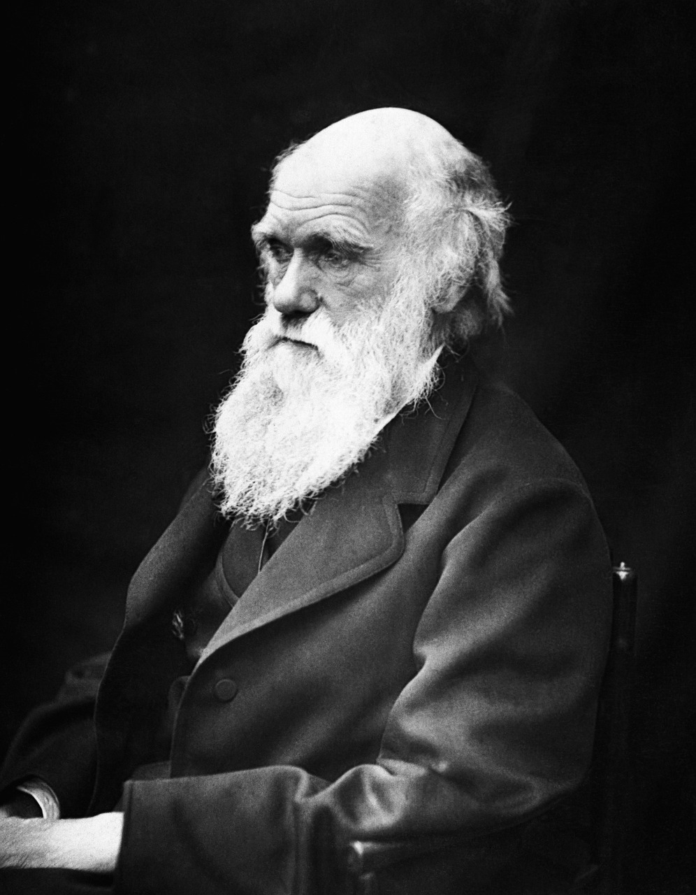
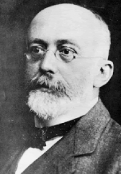

Charles Darwin
Charles Darwin fu il naturalista che sviluppò la teoria dell'evoluzione tramite selezione naturale. Nel suo libro L'origine delle specie (1859), spiegò come gli organismi si adattano e cambiano nel tempo attraverso la sopravvivenza dei più adatti, influenzando profondamente la biologia moderna e il modo in cui comprendiamo la diversità della vita sulla Terra..

Hardy-Weinberg
La legge di Hardy-Weinberg è un principio fondamentale della genetica delle popolazioni, che afferma che, in una popolazione ideale (senza selezione naturale, mutazioni, migrazioni o deriva genetica), le frequenze alleliche e genotipiche rimangono costanti di generazione in generazione. Questo equilibrio fornisce un modello di riferimento per studiare l'evoluzione e le deviazioni dall'equilibrio stesso.